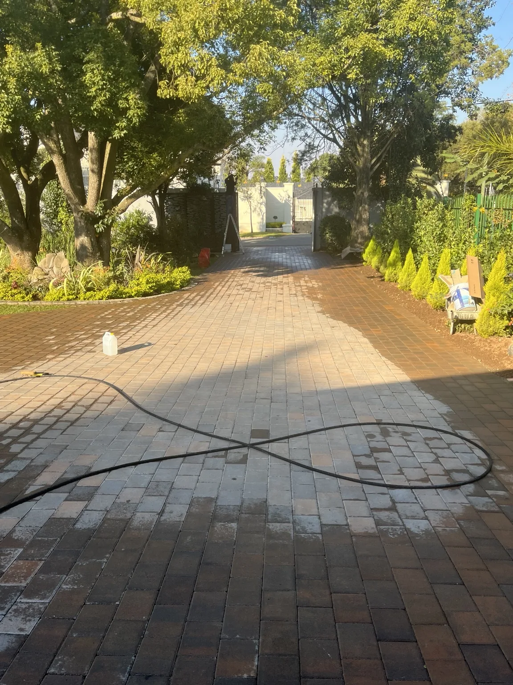
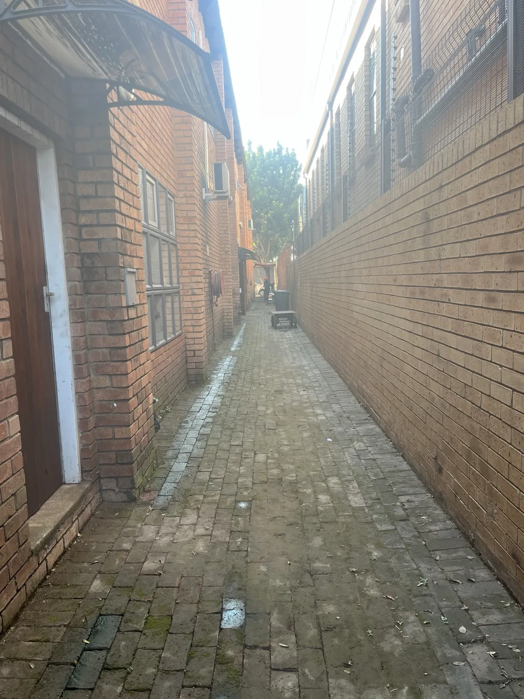
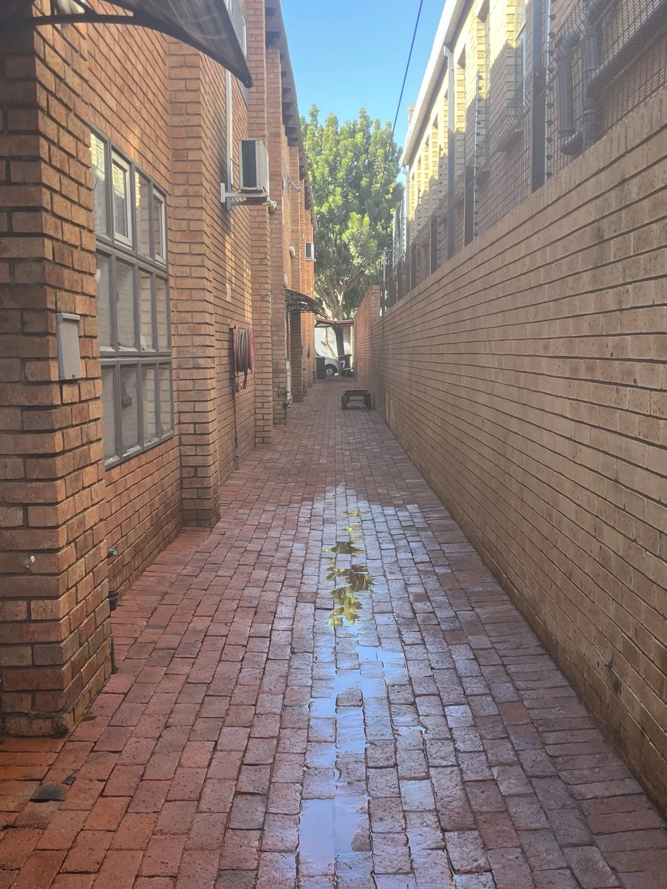
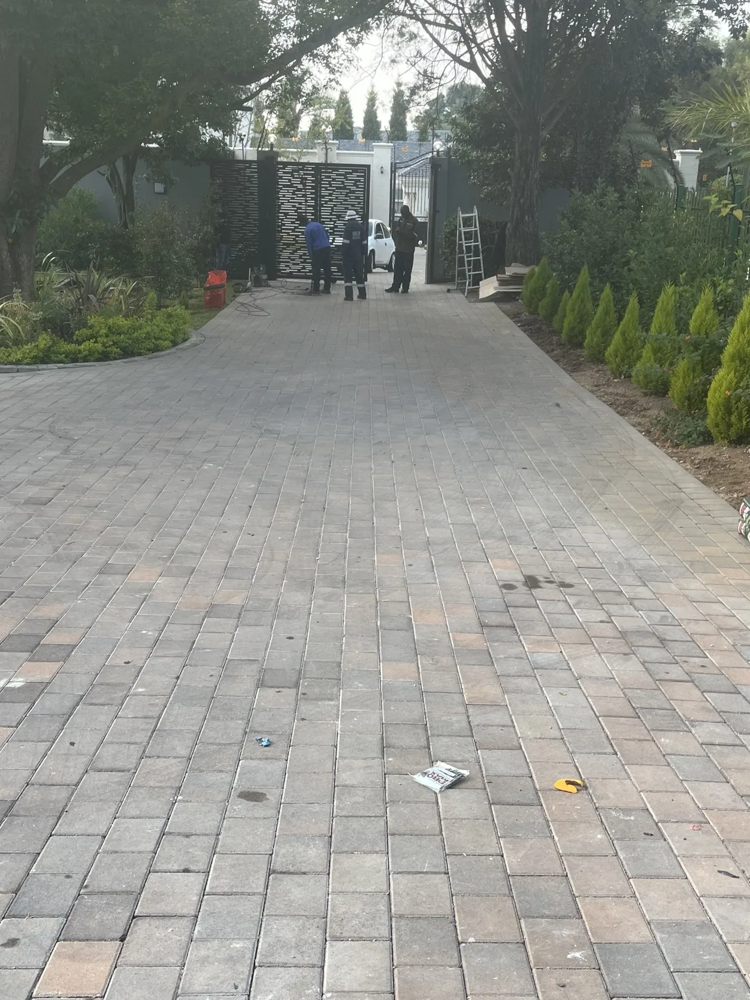
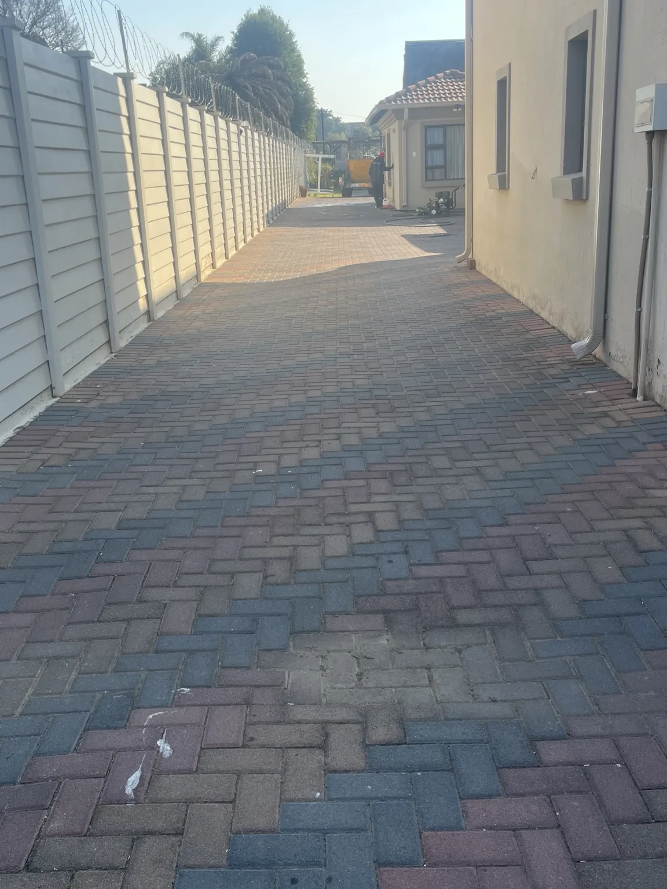
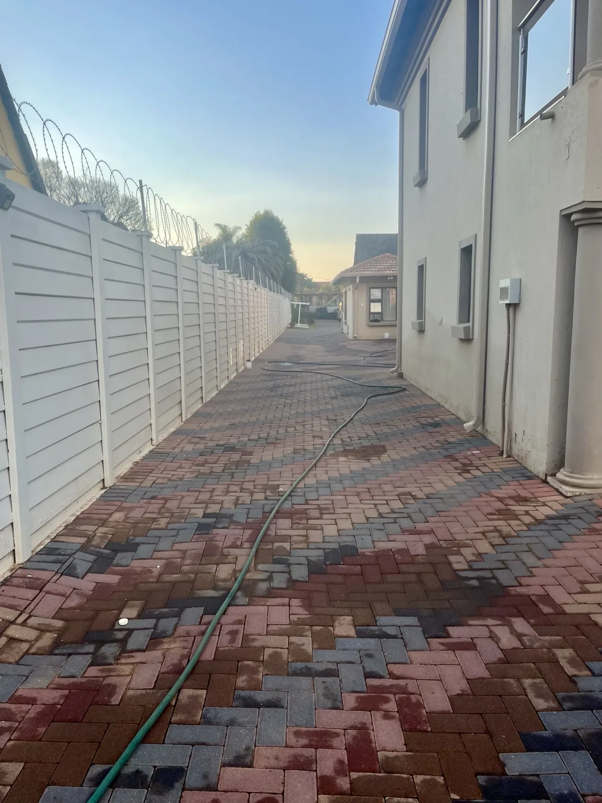
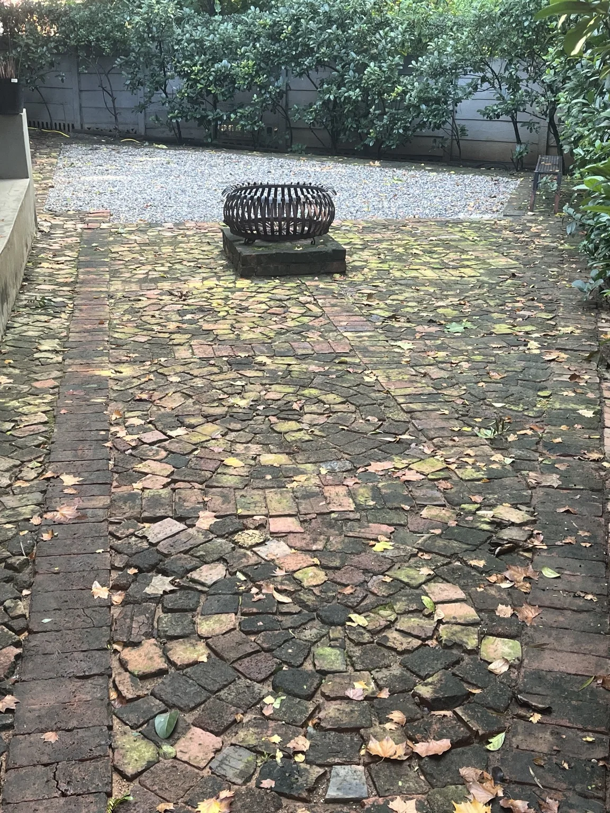
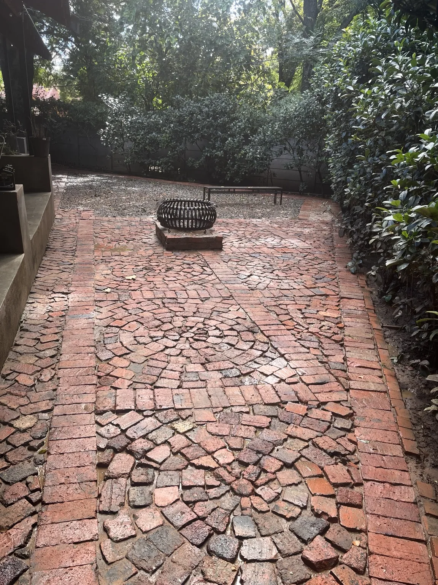
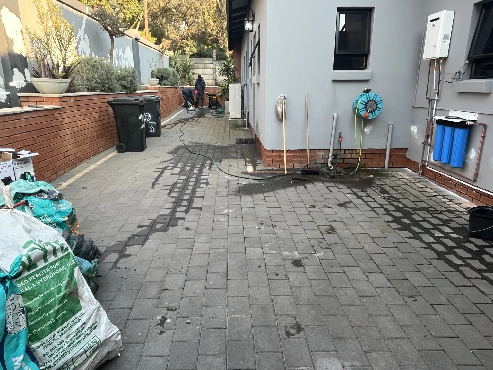
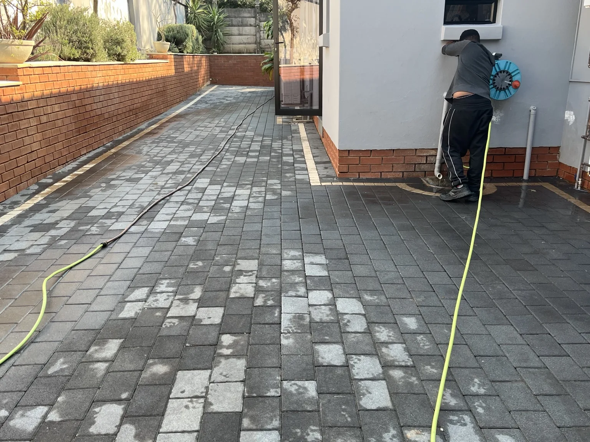

Driveway & Paving Cleaning
Deep cleaning for brick paving, driveways, walkways and hard exterior surfaces affected by dirt, algae and weathering.
Restore the appearance of your property with professional, surface-appropriate exterior cleaning. We help homeowners, businesses and property managers across Pretoria clean driveways, paving, walls, roofs and larger exterior areas.
Serving Pretoria and Pretoria East, including Silver Lakes, Faerie Glen, Silverton, Montana, Murrayfield and surrounding areas.

Every property is assessed before work begins so the cleaning method matches the surface, its condition and the level of buildup.
Deep cleaning for brick paving, driveways, walkways and hard exterior surfaces affected by dirt, algae and weathering.
Exterior cleaning for commercial premises, entrances, paved areas, parking areas and other high-traffic surfaces.
Pressure washing or soft washing selected according to the wall finish, condition and surrounding surfaces.
Surface-appropriate roof cleaning to remove dirt, algae and organic buildup while protecting the roof material.
Restoration of patios, pool surrounds, entertainment areas and outdoor spaces that have become stained or slippery.
Lower-pressure exterior cleaning for more delicate surfaces where high pressure is not the appropriate method.
Genuine Modern Pressure Wash projects completed in Pretoria suburbs, using before-and-after photos from our own work.
Weathering and organic buildup had dulled this narrow paved passage. Professional pressure washing lifted the buildup and restored the warmer brick tones for a noticeably cleaner finish.
Service: Brick paving pressure washing.


This broad residential driveway had accumulated dirt and weathering across the paving. A detailed clean restored a brighter, more defined appearance while working carefully around the established garden and property entrance.
Service: Driveway and paving pressure washing.

Built-up dirt had muted the colour variation in this red-and-charcoal paving. Professional cleaning removed the surface buildup and brought back a fresher, more defined finish around the home.
Service: Residential paving pressure washing.


Shaded older brick paving had developed substantial green organic growth and weathering. Careful cleaning removed the buildup and revealed the original red brick character beneath.
Service: Organic growth removal and brick paving cleaning.


This paved area around the home was professionally cleaned to remove accumulated surface dirt and improve the overall appearance of the driveway and access areas.
Service: Driveway and paving pressure washing.


For homeowners, we restore exterior areas that have gradually become darkened by dirt, algae, weathering and everyday use.
For businesses, complexes and property managers, we provide scalable exterior cleaning for larger and higher-traffic areas where presentation, maintenance and safe working methods matter.
We serve residential and commercial clients across Pretoria. Our genuine local project history includes Silver Lakes, Faerie Glen, Silverton, Montana and Murrayfield, with service extending across Pretoria East and nearby Gauteng areas.
Pricing depends on the size of the area, surface type, level of buildup, access and any specialist treatment required. We provide a free quotation after assessing the scope, often from photos and measurements supplied by the client.
Yes. Modern Pressure Wash works on residential homes as well as commercial properties, complexes, business premises, paved areas and other exterior surfaces.
It can if the wrong pressure or technique is used. We assess the material and condition first, then choose an appropriate pressure-washing or soft-washing method for the surface.
Yes. Organic buildup such as algae and mould can be treated as part of the cleaning process, depending on the surface and severity of the contamination.
We service Pretoria and surrounding areas, including Silver Lakes, Faerie Glen, Silverton, Montana, Murrayfield, Moreleta Park and Pretoria East, with suitable projects also extending to Centurion, Irene, Midrand and other parts of Gauteng.
In many cases, yes. Clear photos, approximate measurements and a short description of the areas to be cleaned can be enough to prepare an initial quotation. A site assessment may still be required for larger or more complex work.
Send us photos of the areas you would like cleaned and we will prepare a quotation for your property.